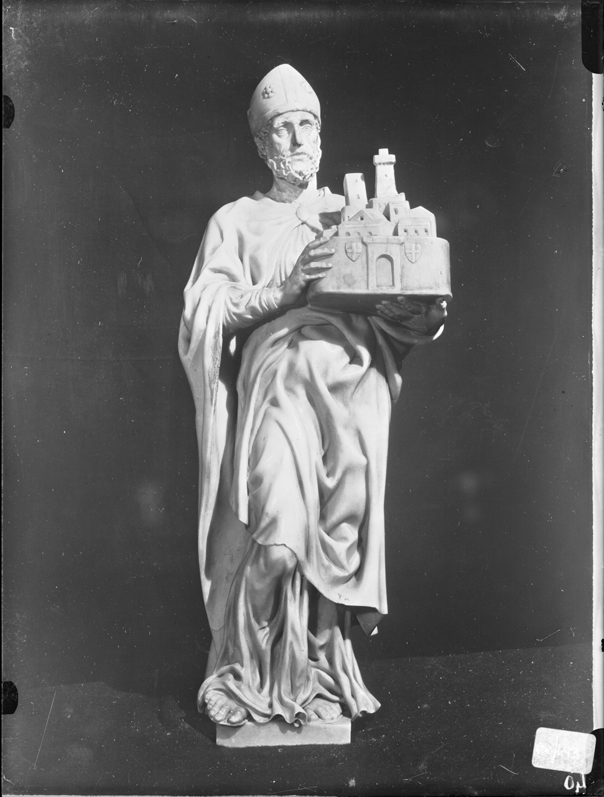

San Petronio
Figura intera a tutto tondo, in piedi, frontale, il capo mitrato, il viso incorniciato da corta barba ricciuta. Sopra la veste indossa piviale largamente drappeggiato e chiuso sotto il collo da una fibula ovale. Regge con entrambe le mani, alla sua sinistra, il modellino della città di Bologna. Il ginocchio destro è avanzato. Base quadrangolare su rotolo marmoreo.La statua fu realizzata tra il 1494 e il 1495 da Michelangelo Buonarroti per il monumento funebre dedicato a San Domenico di Guzmán conservata nella Basilica di San Domenico. L'opera richiama la statua dell'omononimo Santo di Jacopo della Quercia presente nel portale centrale della Basilica di San Petronio a Bologna.
- Titolo: San Petronio
- Creatore: Buonarroti, MichelangeloVIAF
- Data: 1494-1495
- Tipo di oggetto: statua < scultura < arte plastica < arteWordNet
- Dimensioni: 70(h)
- Materiale: marmo di carrara
- Soggetti: San Petronio
- Codice di Catalogo Nazionale: 0800024755
- Istituzione fornitrice: Soprintendenza Archeologia, Belle Arti e Paesaggio per la città metropolitana di Bologna e le province di Modena, Reggio Emilia e Ferrara
- Intermediario: Istituto Centrale per il Catalogo e la DocumentazioneSIGECweb
- Posizione attuale: Basilica di San DomenicoGeoNames
- Condizione Giuridica: Proprietà dello Stato
Fotografie correlate a questo item:

Fotografie dei particolari eseguite in occasione del trasporto della salma di S. Domenico nel rifugio (Cimasa)
Creatore: Achille Villani & figliVIAF
Tutti i metadati